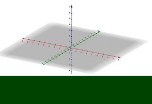
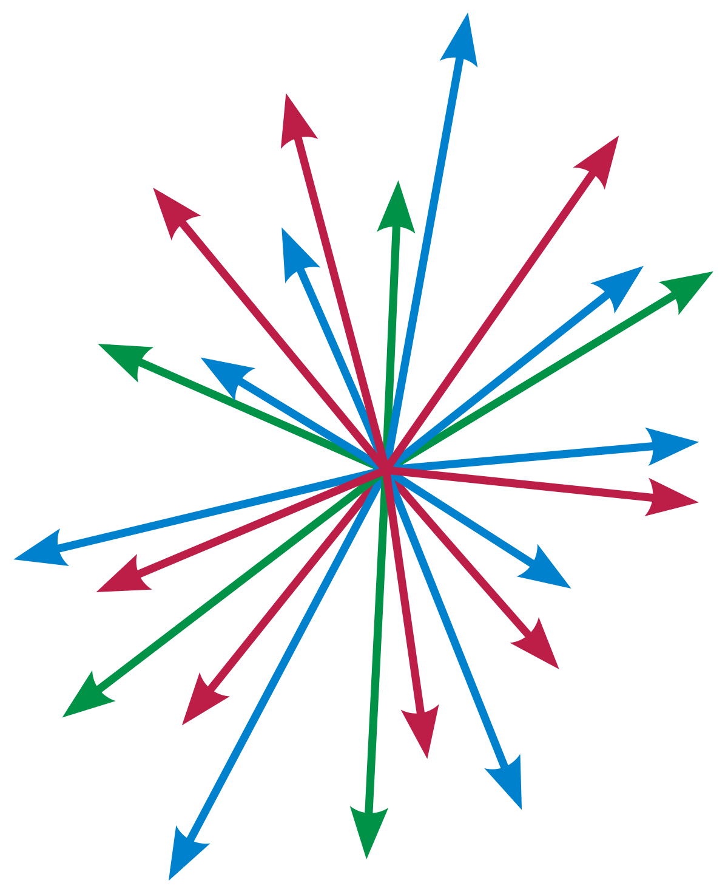

Tabla de contenidos
- 1. Introducción
- 2. Espacios Vectoriales (EV)
- 3. Propiedades de un Espacio Vectorial
- 4. Algunas actividades para afianzar ideas
- 5. Espacio vectorial (definición formal)
- 6. Base y dimensión de un espacio vectorial
- 7. Espacios vectoriales, bases y soluciones de un sistema de ecuaciones lineales homogéneo
- 8. Autoevaluación
- 9. Archivos Completos
1. Introducción
En el libro anterior estuvimos trabajando con sistemas de ecuaciones lineales homogéneos. Al trabajar con este libro terminaremos averiguando cuál es la mínima cantidad de vectores que necesitamos para tener todas las soluciones de un sistema de ecuaciones lineales homogéneo y cómo deben ser esos vectores. Para ello acudiremos al concepto de Espacio Vectorial. Desde ya, este concepto permite entender muchas otras cuestiones y no solo las soluciones de los sistemas homogéneos. Algunas de esas cuestiones las veremos en las siguientes unidades.
2. Espacios Vectoriales (EV)
Comenzamos con un video en el que el profesor Martín Ch. nos explica qué entendemos por espacio vectorial. Esto también lo encuentran en el problema 31 de la página 89 de la Guía de problemas.

Posteriormente, realicen el problema 32 de la página 89 de la Guía de problemas.
Luego, vean el siguiente video en el que el profesor Claudio nos muestra una resolución posible:
3. Propiedades de un Espacio Vectorial
Hay dos propiedades importantes que cumplen los vectores que pertenecen a un espacio vectorial. En el problema 33 de la página 90 de la Guía de problemas se enuncian estas propiedades.
Además, el profesor Martín T. las explica en el siguiente video:
4. Algunas actividades para afianzar ideas
Ahora les pedimos que realicen el problema 34 (pág 90) y el 35 (pág 91) de la Guía de problemas.
Luego, pueden mirar los siguientes videos en los que el profesor Gastón nos muestra algunas resoluciones posibles.
- Video con una resolución del problema 34 pág 90 de la Guía
- Video con una resolución del problema 35 pág 91 de la Guía
El conjunto de todas las soluciones de un sistema de ecuaciones lineales homogéneo es un espacio vectorial. ¿Por qué?
También realicen el problema 36 de la página 91 de la Guía de problemas. No dejen de hacer sus Consultas en el foro.

No todo conjunto es un espacio vectorial. Realicen el problema 37 de la página 91 de la Guía de problemas.
Luego, pueden ver una resolución posible de la profesora Perla en el siguiente video:
5. Espacio vectorial (definición formal)
En los libros de texto se suele definir espacio vectorial en forma axiomática. Se toma un conjunto de objetos (en realidad se tomarán dos conjuntos) y un par de operaciones. Y un espacio vectorial será el conjunto de objetos con esas operaciones siempre que esas operaciones cumplan con ciertas propiedades.
Nosotros vamos a estar trabajando con espacios vectoriales en el que los vectores tienen \( n \) componentes reales y los escalares son números reales. Existen espacios vectoriales en el que los vectores son otras “cosas” más raras y los escalares también.
Para ver esta definición sobre espacio vectorial, les acercamos las primeras páginas del capítulo de 5 del texto siguiente:
- Grossman y Flores (2012) Álgebra lineal. Cap. 5. Pág 295 a 302

6. Base y dimensión de un espacio vectorial
Hemos visto que con un conjunto finito de vectores (sistema de generadores) podemos “armar” infinitas combinaciones lineales de ellos y construirnos todo un espacio vectorial.
Al resolver el problema 36 vimos que es posible definir el mismo espacio vectorial a partir de diferentes sistemas de generadores. ¿Cuántos vectores cómo mínimo necesitamos para un sistema de generadores de un espacio vectorial? ¿Tienen alguna particularidad los escalares de cada combinación lineal?
Para pensar en estas preguntas, vamos a trabajar con la noción de base de un espacio vectorial.
Primero, les pedimos que realicen los problemas 38 (pág 91) y 39 (pág 92) de la Guía de problemas.
Luego, vean los siguientes videos en los que el profesor Marcelo nos muestra una resolución de ambos problemas.
- Video con una resolución del problema 38 (pág 91) de la Guía
- Video con una resolución del problema 39 (pág 92) de la Guía
Hemos visto que, dado un Espacio Vectorial, es posible tener distintos sistemas de generadores de él. Es decir, con distintos conjuntos de vectores nos podemos armar el mismo Espacio Vectorial. Si nos quedamos con un cierto Espacio Vectorial, ¿cuántos vectores como mínimo puede tener un sistema de generadores? ¿Depende del sistema de generadores? Los escalares, ¿Tienen alguna característica en particular en el caso de que trabajemos con sistema de generadores con la mínima cantidad de vectores posibles? Para empezar a responder estas preguntas, vean el siguiente video del profesor Daniel.
¿Qué es una base de un espacio vectorial? ¿Qué es la dimensión de un espacio vectorial? ¿Qué son las coordenadas de un vector expresadas en una base de un espacio vectorial? En el video anterior se presentaron los conceptos que permiten responder estas preguntas.
En el siguiente video, el profesor Martín C. nos muestra una idea gráfica de base de un espacio vectorial.
Resuelvan los problemas 40, 41, 42, 43, 44, 45. Por favor, planteen sus inquietudes en el foro Consultas y/o en las clases presenciales.
7. Espacios vectoriales, bases y soluciones de un sistema de ecuaciones lineales homogéneo
Retomamos las preguntas que habíamos hecho durante la primera semana.
¿Cuántos vectores son necesarios cómo mínimo son necesarios para caracterizar todas las soluciones de un sistema de ecuaciones lineales homogéneo? ¿Qué característica deben cumplir estos vectores?
Para responder estas preguntas pueden leer el siguiente texto.
8. Autoevaluación
Como parte de la evaluación continua les proponemos la Autoevaluación sobre Espacios Vectoriales. Ingresen al cuestionario para ver la fecha de apertura y la de cierre. Esta autoevaluación involucra temas de toda la unidad.
El puntaje que se obtiene en la autoevaluación solo debe tomarse como un porcentaje de resolución correcta.
Esperamos que para cuando sea el momento de realizar la autoevaluación hayan podido realizar las actividades de práctica, realizado las Consultas, leído los textos y vistos los videos.